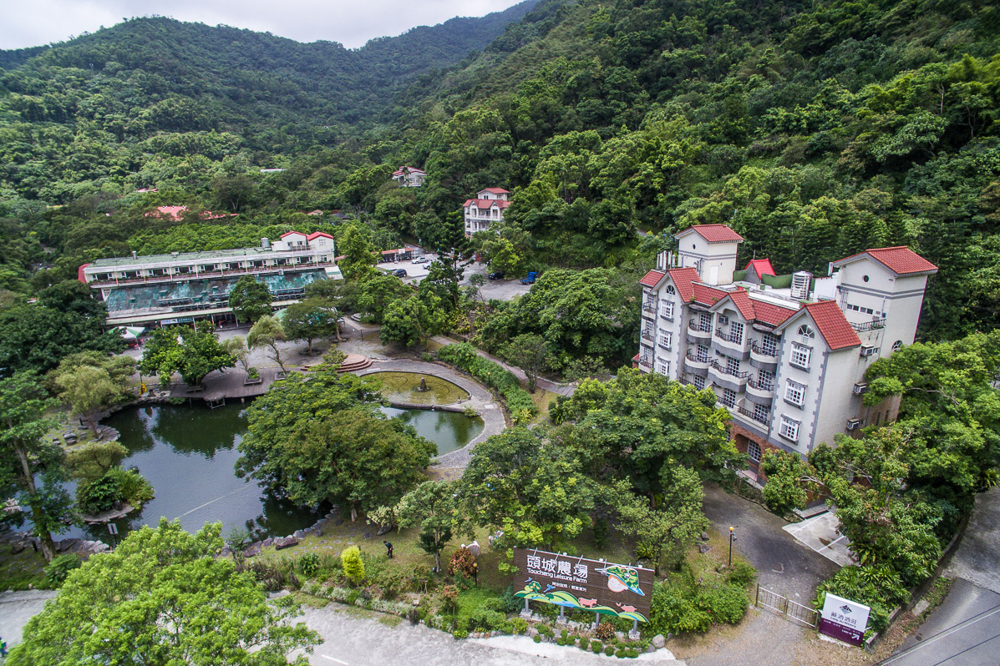
✦ 1979 – 2026 ✦
頭城農場 & 藏酒酒莊
永續農業 · 生態旅遊 · 在地釀造
從雪山山脈到太平洋，從120公頃的有機農場到獲得國際金牌的生態酒莊
用近半世紀的堅持，守護這片土地的純淨與美好
1979
創立 · 逾47年
120
公頃 · 生態農場
7
項永續認證
Grand Or
2026國際金牌
10.18
kgCO2e/人次遊程
按下一頁或按 → 鍵繼續 ▶

永續農業 · 生態旅遊 · 在地釀造
從雪山山脈到太平洋，從120公頃的有機農場到獲得國際金牌的生態酒莊
用近半世紀的堅持，守護這片土地的純淨與美好
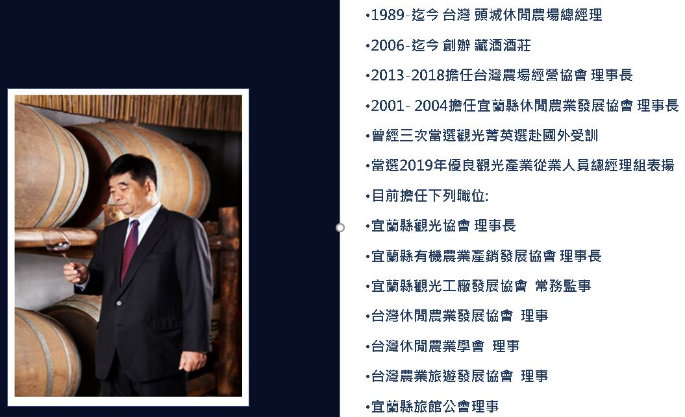
Toucheng Leisure Farm — 台灣東北角的永續農業典範
宜蘭縣頭城鎮更新路125-1號。倚山面海，位於雪山山脈與太平洋交界，距台北約2小時車程。屬東北角海岸國家風景區範圍，為國土生態綠網行動節點。
創辦人：卓陳明女士（教育家出身，人稱卓媽媽）
董事長：卓志宏（宜蘭縣觀光協會理事長）
集團：同集團另有藏酒酒莊、頭城休閒旅館
三生一體：生態·生產·生活
五大主軸：環境教育、戶外學習、健康養身、樂活慢遊、生命教育
願景：成為國內外休閒農業標竿農場
從傳統農田到國際永續標竿 — 五階段演化
傳統農業生產為主，種植果樹、蔬菜。創辦人卓陳明女士帶著孩子來到宜蘭落地生根，開創農場事業。
順應台灣休閒農業浪潮，開放觀光提供農村生活體驗。赤腳插秧、餵牛吃草，成為北台灣校外教學經典回憶。
導入DIY手作、生態導覽、住宿餐飲。建立環境教育課程體系，從觀光休閒升級到深度生態旅遊。
2018年通過GSTC全球永續旅遊認證，為東北角國家風景區首個國際永續認證旅館。導入系統化永續管理架構。
推動森川里海整合策略，從場域延伸到山海環境。2026年取得DNV碳足跡國際查證，創全國首例。
雪山山脈與太平洋交會，得天獨厚的生態寶庫
雪山山脈山腳下，海拔50-300公尺。保留原始次生林：50公頃桂竹林、相思樹林、楓香林及果園。屬東北角海岸國家風景區，每年清明舉辦桂竹筍祭。
三條溪流貫穿園區：平溪、桃子林溪、梗枋溪（列入國土生態綠網重點保育）。水源來自雪山山脈天然湧泉，水質純淨無污染。溪畔滿布野薑花，夏季飄香為農場芳香秘境。
有機菜園2公頃產蔬菜供應餐廳及鄰近小學營養午餐。500多棵金桔金棗樹為宜蘭最具特色果樹。水稻田、火龍果園、柑橘園四季生產。2026年啟動瀕危物種葦草蘭復育。
紅外線自動相機監測：山羌、山豬、獼猴、食蟹獴、穿山甲、台灣藍鵲。四種螢火蟲復育：擬紋螢、紅胸黑翅螢、黃緣螢、山窗螢。大白斑蝶、翡翠樹蛙、竹節蟲、青山蝸牛等。
台灣取得最多國際永續認證的休閒農場之一
由UN Foundation、UNWTO、Rainforest Alliance共同發起。2018年通過Control Union稽核，2019年正式獲頒。東北角國家風景區首個國際永續旅館認證。
2021年取得環境部（原環保署）標章。落實廢棄物回收再生、續住重複使用寢具毛巾、熱泵鍋爐節能設備、太陽能熱水系統、汙水處理監測。
荷蘭創立之國際標章，專為中小型旅宿設計，準則對接GSTC。2023年取得。2026年將遵循歐盟強化消費者綠色轉型指令進行升級。
2023年三月取得，課程對象含：幼稚園至大學/成人，等。向大地學知識，與萬物交朋友。
全國首例遊程碳足跡取得DNV第三方國際查證
環境 Environmental × 社會 Social × 治理 Governance
從農場出發，連結山海，串聯企業與社區
山林復育與棲地連結。原生樹種種植、除伐撫育、碳匯行動。紅外線監測山羌、穿山甲、食蟹獴。目標成為國土生態綠網行動節點。
水域生態守護。梗枋溪列國土生態綠網重點保育。定期水質檢測、生物監測。溪畔環境教育：溪流靜心疊石、花草曼陀羅。野薑花芳香秘境。
海廢治理與漁業支持。Eco Box循環箱取代保麗龍，海廢熱壓成再生板材。深度旅遊：漁獲拍賣、Eco Box體驗。支持定置漁網、一支釣等永續漁法。
社區共好與在地產業。梗枋社區學童植樹、桂竹筍祭市集。綠色廚房連結友善生產者與消費者，帶動地方經濟與就業。
2026年4月正式啟動，企業、林業署與農場三方合作
從半日遊到二日遊，從賞螢到品酒，從親子到企業
每年4/15-5/15限定。賞螢生態講座。四種螢火蟲：擬紋螢、紅胸黑翅螢、黃緣螢、山窗螢。
葉拓T恤（將農場植物拓印在衣物上）、金桔醋、金棗蜜餞DIY、草本手作DIY。將農場自然元素化為專屬紀念品。
水稻文化體驗（插秧、收割、碾米）、種菜樂趣多、生態探索。通過環境教育認證之正式課程，全年提供，幼稚園至成人。
頭城休閒旅館35間客房。一泊三食五體驗：住宿＋早餐＋晚餐＋DIY＋導覽。近期改善硬體設施，更友善長者及幼童。
多處多功能空間與高空繩索訓練場域。適合企業Team Building、團隊凝聚訓練、主管共識營。
全新！全國首例DNV碳足跡查證遊程。每人次僅10.18kgCO2e。低碳飲食、廢棄菇包復育、林業循環廢材盆栽。適合企業ESG團隊日。
用食物說土地的故事 — 從產地到餐桌的永續飲食革命
蜜漬金柑象徵果實、花蜜，代表樹冠層生態。鳥類把大樹當成遊樂場，以果實為食物。
運用海廢做成花朵容器，芳香萬壽菊涼糕沾蜂蜜模仿授粉，代表灌木層生態。
黑糖粉象徵土壤，炸地瓜球模仿山豬掘地覓食，代表地面層生態。
從森林復育到瀕危物種保育 — 企業與農場的永續夥伴關係
2025年起半導體企業支持農場造林。除伐撫育、種植原生樹種，增加碳匯提升生物多樣性。目標成為國土生態綠網行動節點。
2026年4月啟動瀕危物種棲地復育。基金會團隊親自參與栽種。恢復東北角原生基因，重建淺山生態系關鍵蜜源。
在地學童走入林場植樹，認識瀕危物種。體悟「森林和大海是連在一起的」，從教育扎根培養下一代環境公民。
Eco Box 循環箱 — 從漁港出發的海洋革命
6年多前開始將海廢帶回岸上。發現海中廢棄物最大來源為漁獲保冰用的保麗龍，決心從源頭解決。
農場將大溪漁港納入走讀深度旅遊行程，帶客人體驗漁獲拍賣、實際使用Eco Box。由船長親自介紹撈捕海鮮與海洋廢棄物。
物種觀察、棲地營造、溪流監測、森林保護。
土壤改良、有機堆肥、作物栽培、林下經濟。
系統化課程、專業導覽解說、學習成果評量。
在地食材採購、季節風味菜單、沉浸式森林餐桌。
多日停留規劃、夜間觀察導覽、慢生活節奏體驗。
鄰近農漁合作、學術機構、企業夥伴與國際旅客互動。
將菇包轉化為有機質，協助螢火蟲族群棲地復育，並延伸出夜間生態觀察產品。
以蚯蚓箱形成自我維持的生物動力循環，消化有機碎屑，供應富含微生物的有機土。
採用自動滴灌系統，集中展示在地原生物種保育，兼具教育與景觀功能。
直接將生態造林與溪流科學監測納入企業 ESG 遊程。
住宿的策略角色：延長停留時間，方能完整體驗生態
多種模式，滿足多元需求
「Unboxing TFL ESG」— 生態遊程、循環體驗、碳匯見學、餐桌轉譯。對應SDG4/12/13/15。適合企業ESG報告。
一至二日行程，農場導覽、DIY體驗、生態旅遊。可客製化調整。適合員工福利、家庭親子活動。
團隊合作挑戰訓練。環境教育融入團隊建立。適合主管共識營、團隊凝聚訓練。
食農教育、森林療育、環教正式課程。通過認證環境教育設施場所。適合人資教育訓練。
員工志工、在地認養、廢棄物減量。長期合作框架。適合重視永續供應鏈的企業。
從台灣東北角出發，邁向國際永續標竿
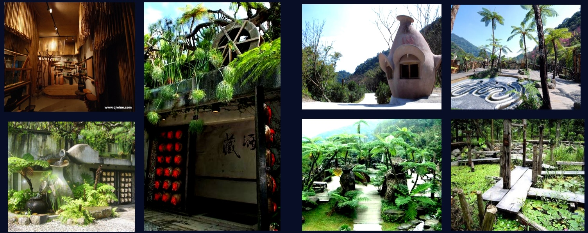
Cang Jiu Winery — 台灣第一家六級化產業生態酒莊
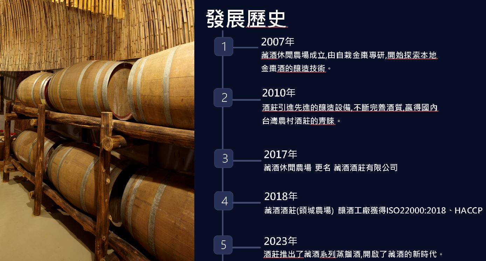
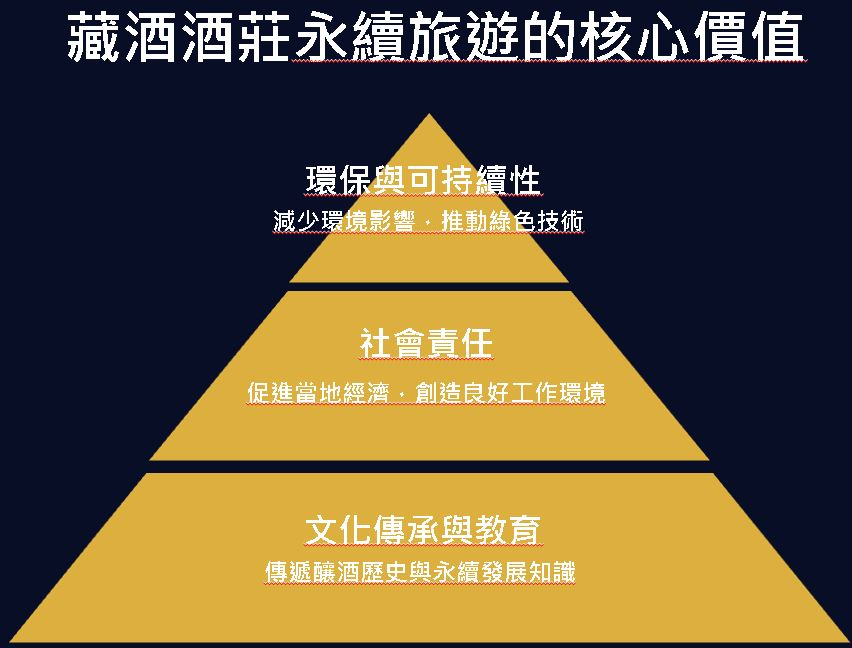
春梅夏葡秋米冬棗 — 順應節氣的釀造哲學
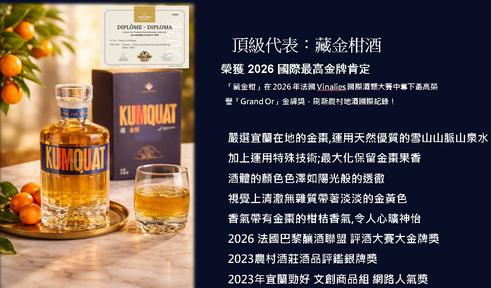
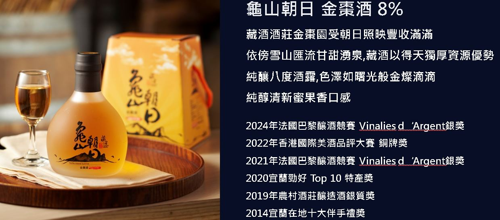
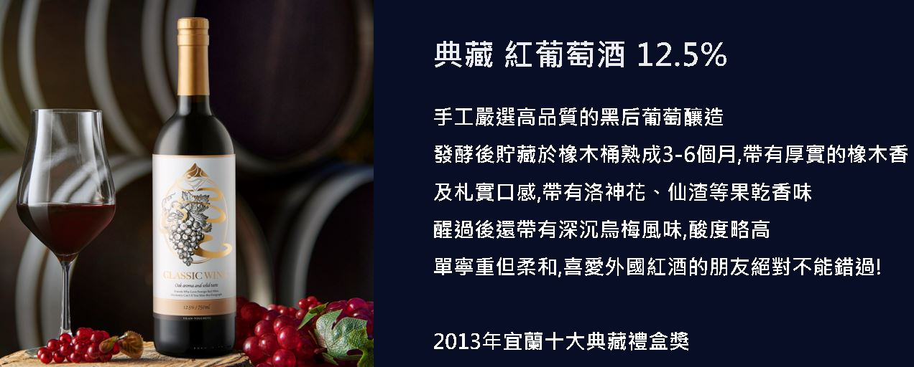
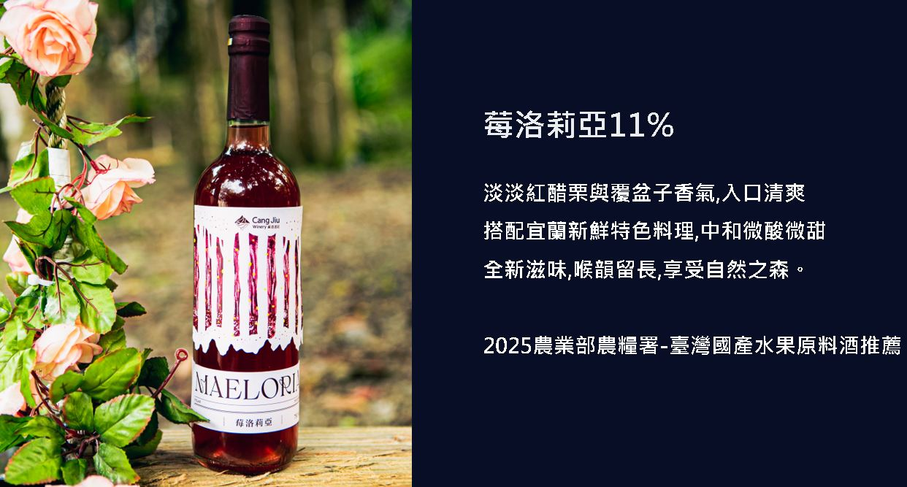
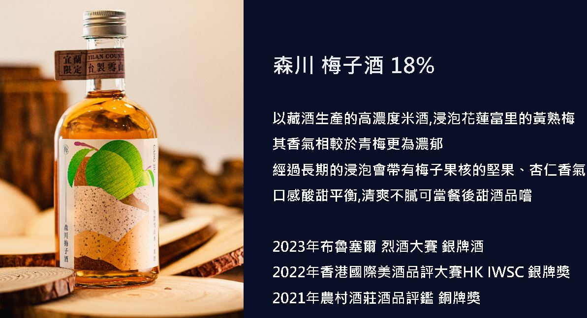
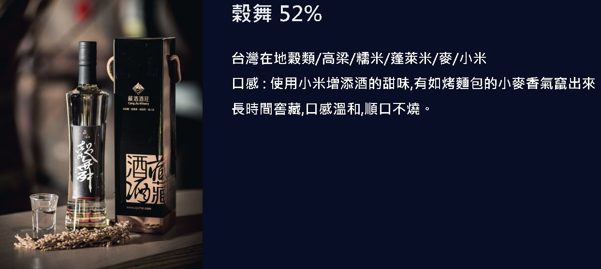
台灣金柑釀造工藝站上世界舞台
得獎酒款：龜山朝日-金棗酒。該屆台灣農村酒莊共獲2特級金牌、5金牌、3銀牌，展現台灣農村酒莊製酒技術已達國際一流水準。
以綠色廚房與永續餐桌設計獲得國際肯定。另獲第一屆大東北角永續實踐故事綠色業者第一名（2025年）。
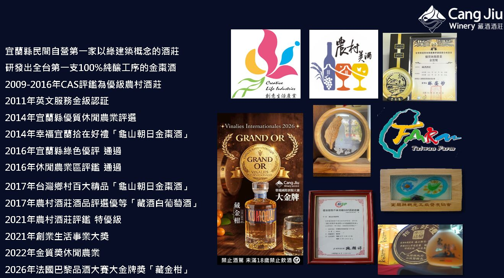
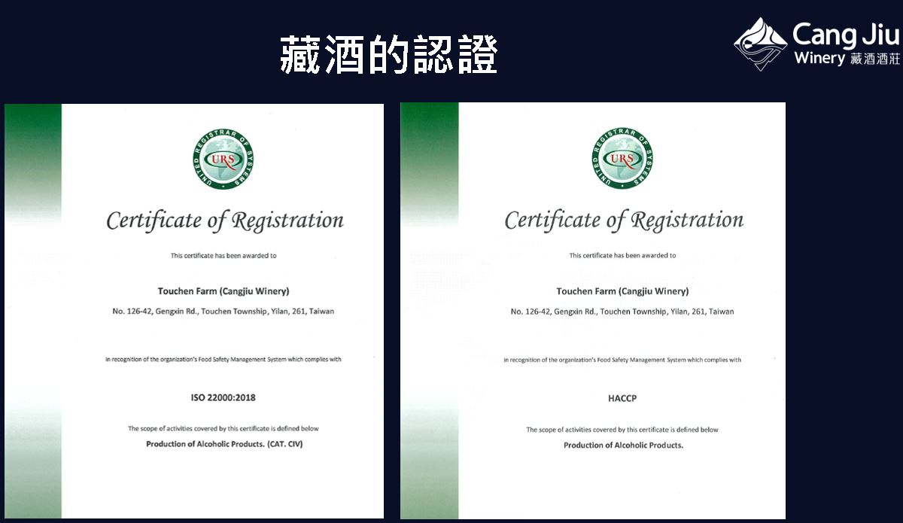
從宜蘭農產到國際精品 — 一顆金柑的華麗轉身
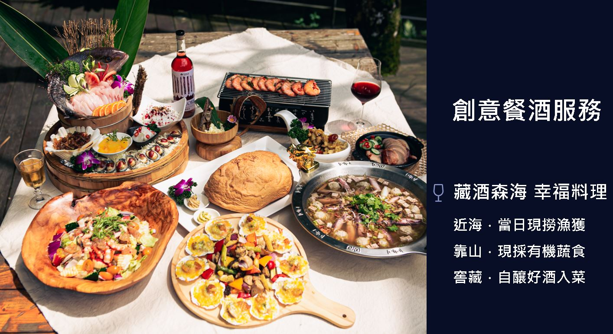
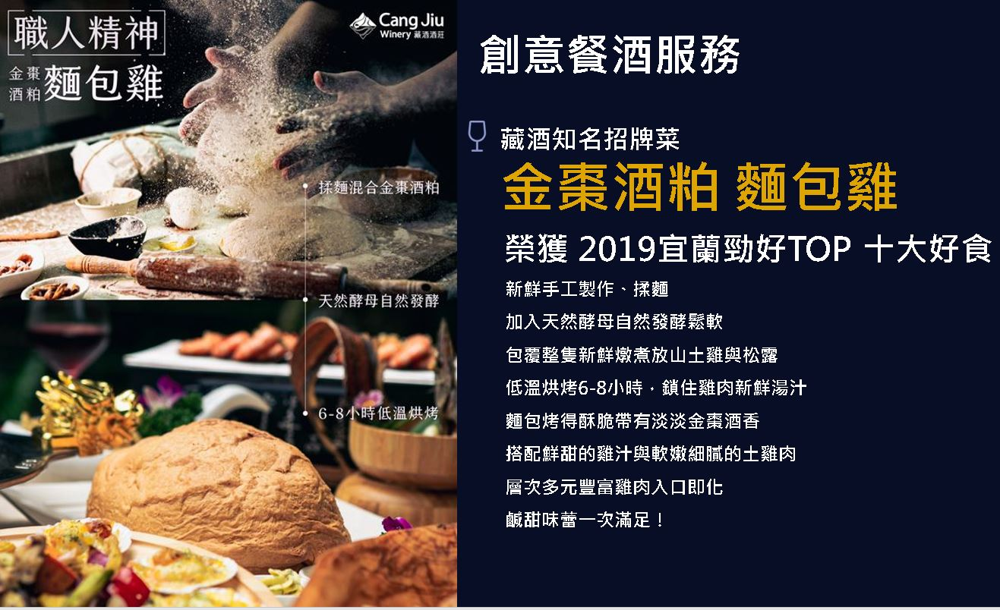
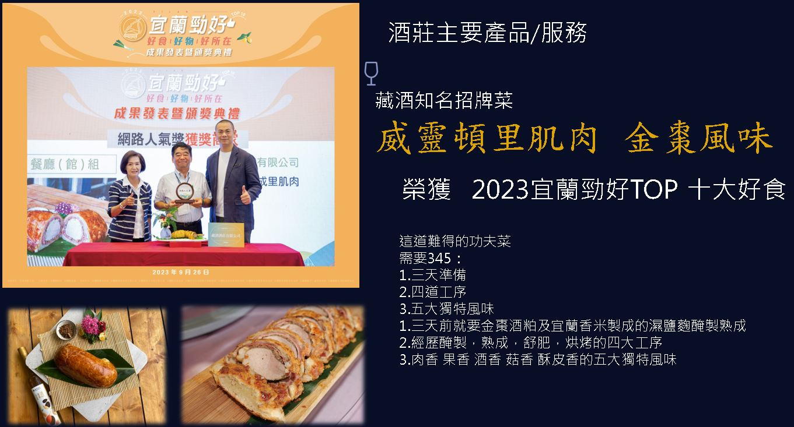
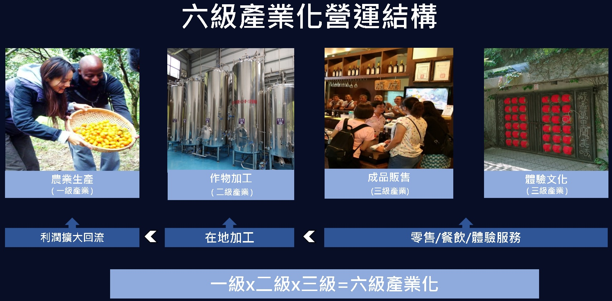
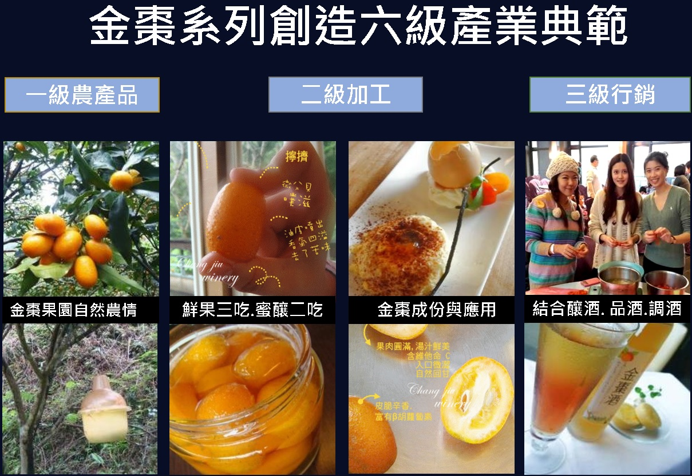
歡迎蒞臨頭城農場與藏酒酒莊，體驗永續旅遊與在地釀造的美好
宜蘭縣頭城鎮更新路125-1號
03-9772220
tcfarminfo@gmail.com
www.tcfarm.com.tw
LINE：@tc039772000
宜蘭縣頭城鎮更新路126-50號
03-9778555
service@cjwine.com
www.cjwine.com
LINE：@amb5687a
自行開車：國道5號頭城交流道→台2線濱海公路→梗枋橋頭轉更新路
大眾運輸：台鐵頭城站或龜山站，轉計程車約10分鐘
全年無休，詢問處08:30-17:30
© 2026 頭城休閒農場 Toucheng Leisure Farm & 藏酒酒莊 Cang Jiu Winery
🚫 禁止酒駕 · 未滿18歲禁止飲酒